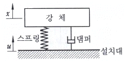
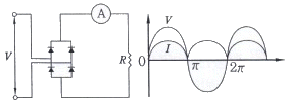
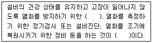
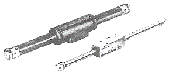
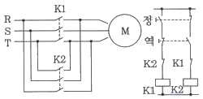

설비보전기사(구) (2013-09-28 기출문제)
1과목: 설비 진단 및 계측
1. 다음 중 소음방지 기본 방법이 아닌 것은?
- 흡음
- 차음
- 진동차단
- 공진
(정답률: 89%)

2. 주파수에 대한 설명으로 옳지 않은 것은?
- 주파수는 1초 동안에 발생한 진동회수를 말한다.
- 소리는 공기와 같은 매체를 통하여 전달되는 소일파이다.
- 주파수는 소리의 속도에 반비례하고 파장에 비례한다.
- 고압력파는 음압의 변화에 따라 변한다.
(정답률: 72%)
3. 1800rpm으로 회전하는 모터에 의하여 구동하는 축, 베어링 및 기어에 대한 이상 유무를 진단하는데 널리 사용되는 설비진단기법은?
- 진동분석법
- 간이진단법
- 응력해석법
- 열화상 분석법
(정답률: 87%)
4. 진동 현상을 설명하는데 있어서 진폭 표시의 파라미터로 적합하지 않는 것은?
- 변위
- 속도
- 위상
- 가속도
(정답률: 83%)
5. 다음 중 피드백 제어계에서 1차 조절계의 출력신호에 의해 2차 조절계의 목표값을 변화시켜 실시하는 제어 방법은?
- 캐스케이드제어
- 정치제어
- 선택제어
- 프로그램제어
(정답률: 68%)
6. 소음에 대한 용어 중 틀리게 설명한 것은?
- 파면 : 파동의 위상이 같은 점들을 연결한 면
- 음파 : 공기 등의 매질을 전파하는 소밀파
- 파동 : 매질의 변형운동으로 이루어지는 에너지 전달
- 음의 회절 : 음파가 한 매질에서 타 매질로 통과할 때 구부러지는 현상
(정답률: 72%)
7. 아래 그림은 설치대로부터 강체로 진동이 전달되는 1자유도 진동시스템이다. 이때 변위 전달율을 바르게 나타낸 것은?

- 변위 전달율 = 강체의 변위진폭 / 설치대의 변위진폭
- 변위 전달율 = 설치대의 변위진폭 / 강체의 변위진폭
- 변위 전달율 = 스프링의 변위진폭 / 댐퍼의 변위진폭
- 변위 전달율 = 댐퍼의 변위진폭 / 스프링의 변위진폭
(정답률: 65%)
8. 소음의 물리적 성질을 설명한 것 중 틀린 것은?
- 음은 대기의 온도차에 의해 굴절되며 온도가 높은 쪽으로 굴절한다.
- 음의 간섭은 서로 다른 파동사이의 상호작용으로 나타난다.
- 도플러 효과는 발음원이 이동할 때 그 진행방향 쪽에서는 원래 발음원의 음보다 고음으로, 진행 반대 쪽에서는 저음으로 되는 현상이다.
- 음원보다 상공의 풍속이 클 때 풍상 측에서는 상공으로, 풍하 측에서는 지면 쪽으로 굴절한다.
(정답률: 69%)
9. 다음 중 음압의 단위로 적합한 것은?
- N
- kgf
- m/s2
- N/m2
(정답률: 77%)
10. 진동전달 경로차단에서 사용되는 일반적인 방법에 대한 설명 중 옳은 것은?
- 스프링형 진동 차단기는 강성이 충분히 높아야 한다.
- 스프링형 진동 차단기에 사용하는 스프링은 고유 진동수가 가능한 높아야 한다.
- 2단계 진동제어는 저주파 진동제어에는 역효과를 줄 수 있다.
- 진동체에 질량을 가하여 고유 진동수를 높이면 효과적이다.
(정답률: 69%)
11. 다음 중 도선을 절단하지 않고 교류 전류를 측정할 수 있는 것은?
- 절연 저항계
- 클램프 미터
- 회로 시험계
- 전압계
(정답률: 78%)
12. 다음 중 진동의 분류에서 외란이 가해진 후에 계가 스스로 진동하는 것은 무엇인가?
- 자유진동
- 강제진동
- 감쇠진동
- 선형진동
(정답률: 87%)
13. 회전축에 설치한 슬릿 원판을 광원과 수광기 사이에 회전시키고 슬릿 사이로 통과하는 빛을 감지하여 서보 모터의 회전각을 측정할 때 사용되는 것은?
- 인코더(encoder)
- 포지셔너(positioner)
- 서보형 센서
- 포토(photo) 다이오드
(정답률: 61%)
14. 다음 중 절대 압력으로 맞는 것은?
- 게이지압
- 대기압 + 게이지압
- 대기압 + 차압
- 차압
(정답률: 81%)
15. 소음계의 취급에 대한 설명 중 잘못 표현된 것은?
- 대상음과 암소음의 차가 10 이하일 때는 암소음을 보정한다.
- 고주파 성분의 소음인 경우 청감보정회로의 A특성과 C특성이 비슷하게 나타난다.
- 변동이 심한 소음은 소음측정기의 동특성 모드를 [FAST]로 하여 사용한다.
- 소음주파수의 분할방식은 1/1옥타브 분석이 1/3옥파브 분석보다 정밀한 분석이 가능하다.
(정답률: 66%)
16. 와전류형 변위센서는 진동의 크기를 전기적으로 변환하는 것이다. 이러한 전기적 크기는 무엇이라 지시되는가?
- 전압
- 저항
- 전력
- 자속
(정답률: 70%)
17. 다음의 그림은 어떤 정류인가?

- 교류
- 직류
- 반파 정류
- 전파 정류
(정답률: 72%)
18. 다음 중 설비의 제1차 진단기술로서 현장 작업원이 사용하는 기술은?
- 간이진단기술
- 정밀진단기술
- 스트레스 정량화 기술
- 고장검출 해석기술
(정답률: 89%)
19. 회전체의 회전중심과 무게중심이 일치하지 않을 때 나타나는 현상은?
- 언밸런스(unbalance)
- 미스얼라인먼트(misalignment)
- 오일 휠(oil shirl)
- 공진(resonance)
(정답률: 71%)
20. 유체의 흐름 속에 날개가 있는 회전자가 유속에 비례한 속도로 회전하며 구조가 간단하고 압력손실이 작은 유량계는?
- 터빈식 유량계
- 초음파식 유량계
- 용적식 유량계
- 와류식 유량계
(정답률: 84%)
2과목: 설비관리
21. 공장 계획 기능을 구분한 것 중 거리가 먼 것은?
- 계획입안
- 조정
- 관리
- 실시
(정답률: 54%)
22. 예방 보전 검사제도의 흐름이 올바르게 된 것은?
- PM검사 표준 설정 → PM검사 계획 → PM검사 실시 → 수리 요구 → 수리 검수 → 설비 보전 기록
- PM검사 계획 → PM검사 표준 설정 → PM검사 실시 → 수리 요구 → 수리 검수 → 설비 보전 기록
- 수리 요구 → PM검사 계획 → PM검사 표준 설정 → PM검사 실시 → 수리 검수 → 설비 보전 기록
- 수리 요구 → 수리 검수 → PM검사 계획 → PM검사 표준 설정 → PM검사 실시 → 설비 보전 기록
(정답률: 69%)
23. 자주보전의 7단계로 맞는 것은?
- 초기청소 - 발생원 곤란개소 대책 – 점검·급유기준 작성 – 자주점검 – 총 점검 – 자주보건의 시스템화 – 자주관리의 철저
- 초기청소 - 발생원 곤란개소 대책 – 점검·급유기준 작성 – 자주보건의 시스템화 – 자주점검 – 총 점검 – 자주관리의 철저
- 초기청소 - 발생원 곤란개소 대책 – 점검·급유기준 작성 – 총 점검 – 자주보건의 시스템화 – 자주점검 – 자주관리의 철저
- 초기청소 - 발생원 곤란개소 대책 – 점검·급유기준 작성 – 총 점검 – 자주점검 – 자주보건의 시스템화 – 자주관리의 철저
(정답률: 73%)
24. 품질개선 활동 중 공정에서 취한 계량치 데이터가 여러개 있을 때 데이터가 어떤 값을 중심으로 어떤 모습으로 산포하고 있는가를 조사하는데 사용하는 그림은?
- 히스토그램
- 파레토도
- 관리도
- 산정도
(정답률: 74%)
25. 프레스의 고장은 지수분포를 따른다. 평균가동시간은 MTBF, 평균수리시간은 MTTR인 경우에 가용도 또는 유용도(Availability)를 계산하는 공식은?
- A = MTTR / (MTBF + MTTR)
- A = MTBF / (MTBF + MTTR)
- A = (MTBF + MTTR) / MTTR
- A = (MTBF + MTTR) / MTBF
(정답률: 68%)
26. 연소관리 중 연소의 합리화를 위해서는 연소율을 적당히 유지하는 것이 필요하다. 부하의 과대 혹은 과소의 대책 중 부하가 과대한 경우의 대책은 다음 중 어느 것인가?
- 이용할 노상면적을 작게 한다.
- 연료의 품질을 저하 시킨다.
- 연소방식을 개량한다.
- 연도를 좁게 하여 통풍이 잘되지 않게 한다.
(정답률: 65%)
27. 설비의 일반적인 범위가 아닌 것은?
- 토지, 건물의 기초
- 사무용 설비
- 생산설비
- 물류 Sotfware 및 자재지원
(정답률: 69%)
28. 일정계획에 결정된 착수·완성의 예정에 따라 작업자에게 작업분배를 하고, 당해공사의 납기대로 완성해 가는지 시간상 진행에 있어서 통제를 하는 것에 대한 것과 관계가 없는 것은?
- 진도관리
- 납기관리
- 일정관리
- 보전관리
(정답률: 69%)
29. 설비보전이 필요한 이유로 적합하지 않은 것은?
- 설비교체 비용 증가에 의한 손실을 방지할 수 있다.
- 안전 및 사기 저하에 의한 손실을 막을 수 있다.
- 생산 증대를 이끌 수 있다.
- 품질 저하로 인한 손실을 유도할 수 있다.
(정답률: 81%)
30. 현재가치 P를 이율 i로 n년 동안 예금하고 일정기간동안 매년말 원금과 이자를 동일액씩 회수할 때의 이 동일액을 알기 위한 계수를 뜻하는 것은?
- 연차동일액 현가계수
- 일괄지불현가계수
- 감채기금계수
- 자본회수계수
(정답률: 60%)
31. 설비관리 업무의 특징으로 옳지 않은 것은?
- 작업량의 변동이 크다.
- 다직종의 고도의 숙련 노동력이 필요하다.
- 외주 이용도가 크다.
- 광범위한 전문기술을 갖춘 기술자가 필요하다.
(정답률: 77%)
32. 계측작업 및 방법의 관리와 합리화를 위한 방안이 아닌 것은?
- 계측 작업의 활용계획과 경제성 검토
- 계측작업의 표준화
- 조건의 합리화
- 계측기의 사용 및 취급법의 적정화
(정답률: 52%)
33. 설비 성능 열화의 원인과 열화의 내용이 바르지 못한 것은?
- 자연 열화 – 방치에 의한 녹 발생
- 재해 열화 – 폭풍, 침수, 폭발에 의한 파괴 및 노후화 촉진
- 사용 열화 – 취급, 반자동 등의 운전 조건 및 오조작에 의한 열화
- 노후 열화 – 방치에 의한 절연 저하 등 재질 노후화
(정답률: 72%)
34. 보전도 공학의 영역은 회사의 조직구조, 설계되는 설비의 종류와 복잡성 등에 따라 차이가 나지만 그 조직은 대체로 계획, 분석, 설계 및 합리화 팀으로 구성되어 설계의 중추적 역할을 수행한다. 각 팀의 기능 중 설계절충, 모형개발 및 예측, FMECA, LCC 등과 같은 것은 어디에 속하는가?
- 보전도 계획
- 보전도 분석
- 보전도 설계
- 보전도 합리화
(정답률: 46%)
35. 설비나 시스템의 모든 고장발생 유형, 성능에 끼치는 잠재영향, 안전에 관한 치명도를 자세히 검사하여 해결을 모색하는 방법은?
- 결함나무분석(FTA : Fault Tree Analysis)
- 고장유형영향분석(FMEA : Failure Mode and Effect Analysis)
- 고장유형, 영향 및 심각도 분석(FMECA : Failure Mode, Effect and Criticality Analysis)
- 고장이력관리시스템(MMSMBH : Maintenance Management System of Machine Breakdown History)
(정답률: 75%)
36. 다음 중 고장의 분석 후 대책을 세우는 방법으로 틀린 것은?
- 강도 내력을 향상 시킨다.
- 작업방법을 개선 한다.
- 검사주기, 방법을 개선 한다.
- 응력을 집중 시킨다.
(정답률: 82%)
37. 보전장비가 어디에 위치하여 있는 가는 보전작업의 용이성에 직접적인 영향을 끼친다. 보전부지선정에 있어서 고려해야 할 요소와 가장 거리가 먼 것은?
- 부지 이용률
- 에너지 이용도
- 비용 요소
- 시장 근접성
(정답률: 62%)
38. 종합적 설비관리는 다른 활동과 다소 차이가 있다. 다음 중 종합적 설비관리의 특성이 아닌 것은?
- 종합적 설비관리의 대상은 고객의 요구가 아니고 사람과 설비이다.
- 종합적 설비관리는 활동은 목표 중시 보다는 과정 중시이다.
- 종합적 설비관리는 제조현장 즉 직접부문에 적용된다.
- 종합적 설비관리를 위하여 개발된 DMAIC이라는 활동단계를 적용하여 혁신하는 것이다.
(정답률: 57%)
39. 생산보전에 의한 효과는 설비에 대한 의존도가 클수록 크게 나타나는데 다음 중 생산보전의 효과라고 할 수 없는 것은?
- 보전비 감소
- 제품불량 감소
- 가동률 증가
- 재고품 증가
(정답률: 83%)
40. 만성 로스 개선으로 PM분석의 특징으로 틀린 것은?
- 원인에 대한 대책은 산발적 대책
- 현상 파악은 세분화하여 파악함으로 해석이 용이
- 요인 발견 방법은 인과성을 밝혀 기능적으로 발췌
- 원인 추구 방법은 물리적 관점에서 과학적 사고방식
(정답률: 67%)
3과목: 기계일반 및 기계보전
41. 줄작업 시 용도에 따라 작업방법을 선택한다. 이에 해당되지 않는 줄작업 방법은?
- 직진법
- 후퇴법
- 사진법
- 병진법
(정답률: 70%)
42. 제어밸브의 포지셔너를 점검하고자 한다. 내용이 잘못된 것은?
- Nozzle Flapper 부위에서 누설이 발생되면 Nozzle Flapper를 교체한다.
- Feedback Bar와 캠 사이에 링크된 부분이 원활한지 점검한다.
- 포지셔너 내부 캠 위칠를 변경 설치하면 밸브의 제어 기능을 변경할 수 있다.
- ZERO와 RANGE Adjustment를 조정 후 반드시 잠금장치를 조여서 Dritf를 방지한다.
(정답률: 64%)
43. 밀봉장치용 재료 중 불소수지(PTFE)의 특징으로 틀린 것은?
- 내열성이 우수하여 300℃이상의 고온용 기계장치의 밀봉재로 사용한다.
- 마찰계수가 적어 기동 토오크가 작다.
- 내 화학 및 약품성이 있어 화학공장에 널리 사용된다.
- 전기 절연성이 우수하다.
(정답률: 54%)
44. 다음 중 사이클로이드 감속기의 특성이 아닌 것은?
- 평기어 감속기에 비해 경량이다.
- 평기어 감속기에 비해 소음이 적다.
- 평기어 감속기에 비해 효율이 높다.
- 평기어 감속기보다 감속비가 낮다.
(정답률: 64%)
45. 키 맞춤의 기본적인 주의사항 중 틀린 것은?
- 키의 치수, 재질, 형상, 규격 등을 참조하여 충분한 강도의 규격품을 사용한다.
- 키를 맞추기 전에 축과 보스의 끼워 맞춤이 불량한 상태인 경우 키 맞춤을 할 필요가 없다.
- 키는 측면에 힘을 받으므로 폭, 치수의 마무리가 중요하다.
- 키 홈은 축과 보스를 기계가공으로 축심과 완전히 직각으로 깍아낸다.
(정답률: 71%)
46. 다음 ( )안에 들어갈 용어로 맞는 것은?

- 개량보전, 예방보전
- 일상점검, 보전예방
- 일상보전, 예방보전
- 생산보전, 사후보전
(정답률: 71%)
47. 감압밸브 주변의 배관에서 바이패스(By-pass line)를 설치하려고 한다. 이때 바이패스관의 관경으로 가장 적당한 것은?
- 1차(고압)측 관경보다 한 치수 정도 작게 한다.
- 1차(고압)측 관경보다 한 치수 정도 크게 한다.
- 1차(고압)측 관경보다 2배 정도 크게 한다.
- 1차(고압)측 관경보다 3배 정도 크게 한다.
(정답률: 61%)
48. 풍량의 변화에 대한 축 동력의 변화가 가장 큰 송풍기는 어느 것인가?
- 터보 팬
- 래이디얼 팬
- 다익 팬
- 에어포일 팬
(정답률: 68%)
49. 벨트식 무단변속기의 특징으로 올바르지 않은 것은?
- 벨트와 풀리(Pulley)의 접촉위치 변경에 의한 직경비를 이용
- 무단변속에 사용되는 벨트의 수명은 정상 수명의 1/2~1/3 수준
- 가변피치 풀리가 유욕식으로 정기적인 점검이 필요
- 구동계통의 오염으로 인한 윤활불량에 유의
(정답률: 47%)
50. 타이밍 벨트(timing belt)에 대한 설명으로 틀린 것은?
- 큰 힘의 전동에 적합하다.
- 굴곡성이 좋아 작은 풀리에도 사용 된다.
- 정확한 회전 각속도비가 유지 된다.
- 축간 거리가 짧아 좁은 장소에도 설치가 가능하다.
(정답률: 60%)
51. 단상 유도 전동기에서 무부하에서 기동하지만 부하를 걸면 과열되는 원인으로 옳지 않은 것은?
- 과부하(overload)
- 전압 강하
- 단락장치의 고장
- 회전자 코일 단선
(정답률: 55%)
52. 나사의 표시법에서 M10-6H/6g에 대한 설명으로 맞는 것은?
- 미터 보통나사(M10) 수나사 6H와 암나사 6g의 조합
- 미터 보통나사(M10) 암나사 6H와 수나사 6g의 조합
- 미터 관용평행나사(M10) 수나사 6H와 암나사 6g의 조합
- 미터 관용평행나사(M10) 암나사 6H와 수나사 6g의 조합
(정답률: 67%)
53. 경도와 취성을 줄이고 강인성을 부여하기 위해 담금질한 강을 A1 변태점 이하의 일정온도로 가열한 후 냉각하는 열처리를 무엇이라 하는가?
- 뜨임
- 담금질
- 불림
- 풀림
(정답률: 68%)
54. 관경이 비교적 크거나 내압이 높은 배관을 연결할 때 나사 이음, 용접 등의 방법으로 부착하고 분해가 가능한 관 이음쇠는?
- 주철관 이음쇠
- 플랜지 이음쇠
- 신축 이음쇠
- 유니언 이음쇠
(정답률: 77%)
55. 교류 및 직류 아크용접기의 특성을 비교 설명한 내요으로 틀린 것은?
- 교류 아크용접기가 직류 아크용접기 보다 감전위험성이 높다.
- 강 전류 일 때 자기쏠림현상은 직류 아크용접기가 심하다.
- 무부하 전압은 교류 아크용접기가 높다.
- 아크의 안정성은 교류용접기가 직류용접기 보다 우수하다.
(정답률: 68%)
56. 나사체결 방법으로 옳지 않은 것은?
- 나사체결전 볼트의 강도등급을 확인한다.
- 볼트 체결방법은 토크법, 너트회전각법, 가열법, 장력법이 있다.
- 큰 장력으로 조일 수 있는 적절한 체결방법은 텐셔너(장력법)를 이용하는 방법이다.
- 토크법은 나사면의 마찰계수 불균형을 무시할 수 있다.
(정답률: 71%)
57. 나사의 유효지름을 측정하려 한다. 정밀도가 가장 높은 측정법은?
- 삼침법에 의한 측정
- 공구 현미경에 의한 측정
- 나사 마이크로미터에 의한 측정
- 투영기에 의한 측정
(정답률: 73%)
58. 헬리컬기어의 정면도에서 이를 비틀림 방향을 나타내는 선의 종류는?
- 일점쇄선
- 이점쇄선
- 가는 실선
- 굵은 실선
(정답률: 53%)
59. 연삭숫돌의 입자가 무디거나 눈 에음(loading)이 나타나면 연삭성이 저하하므로 숫돌의 표면을 깎아서 예리한 날을 가진 입자가 표면에 나타나게 하여 연삭성을 회복시키는 작업을 무엇이라 하는가?
- 트루잉(truing)
- 래핑(lapping)
- 폴리싱(polishing)
- 드레싱(dressing)
(정답률: 74%)
60. 공기압 장치 및 배관에서 응축수가 고이기 쉬운 곳이 아닌 것은?
- 공기탱크의 하부
- 오목상(∪狀)배관의 상부
- 분기관의 취출 하부
- 하향구배가 있는 관의 최하단부
(정답률: 74%)
4과목: 윤활관리
61. 절삭유에 요규되는 주요성능으로 틀린 것은?
- 반용착성
- 세정성
- 가열성
- 방청성
(정답률: 76%)
62. 공기 압축기에서 윤활에 큰 영향을 미치는 요소로 맞는 것은?
- 유동점과 인화점
- 열과 물
- 압력과 용량
- 첨가제
(정답률: 73%)
63. 윤활유의 간이측정에 의한 열화 판정에 대한 설명으로 틀린 것은?
- 냄새를 맡아보고 판단한다.
- 기름을 방치 후 색상변화로 수분혼입상태를 판단한다.
- 손으로 기름을 찍어보고 경험으로 점도의 대소를 판단한다.
- 기름과 물을 같은 양으로 넣고 교반 후 기름과 물이 완전히 분리할 때까지의 시간을 측정해 항유화성을 판단한다.
(정답률: 61%)
64. 윤활유의 산화를 촉진하는 일반적인 인자가 아닌 것은?
- 산소
- 금속 촉매
- 표면장력의 저하
- 유온
(정답률: 65%)
65. 윤활관리를 위한 조직체계에 관한 내용으로 틀린 것은?
- 윤활관리에 관한 권한과 책임을 갖도록 구성된 조직이어야 한다.
- 설비운전 기술에 관한 전문지식을 갖는 인원을 위주로 한 조직이어야 한다.
- 자사 실정에 적합한 윤활관리 규정을 제정하고 이에 따라 윤활관리를 실시한다.
- 윤활관리위원회의 구성은 각 부서의 책임자와 윤활관리 기술자를 포함하는 것이 좋다.
(정답률: 70%)
66. 고체윤활제의 일반적 성질에 대한 설명으로 틀린 것은?
- 녹는점이 높을 것
- 열전도도가 좋을 것
- 전단강도가 클 것
- 작은 입자로 되기 쉬울 것
(정답률: 39%)
67. 순환급유 방법 중 고압, 고속의 윤활개소에 가장 적당한 급유방법은?
- 강제 순환 급유법
- 중력 순환 급유법
- 버킷 급유법
- 체인 급유법
(정답률: 77%)
68. SAE 엔진유 점도분류에서 동점도를 표시하는 기준온도는?
- 10℃
- 30℃
- 60℃
- 100℃
(정답률: 60%)
69. 윤활관리 효과 중 생산성 제고의 효과라고 볼 수 없는 것은?
- 윤활유 사용 소비량의 절약
- 수명 연장으로 기계설비 손실액의 절감
- 기계의 효율향상 및 정밀도의 유지
- 노동의 절감
(정답률: 39%)
70. 윤활관리의 실시방법 중에서 재고관리에 대한 해당 내용으로 틀린 것은?
- 적절한 방법으로 저장한다.
- 적절한 시기에 사용유를 교환한다.
- 윤활제의 반입과 불출을 합리적으로 관리한다.
- 윤활제를 합리적 방법으로 구입한다.
(정답률: 52%)
71. 다음 중 윤활제의 중화가를 측정하는 방법으로 맞는 것은?
- 전위차 측정법
- 콘라드손법
- 램스보텀법
- 형광분석법
(정답률: 61%)
72. 윤활성은 다소 떨어지지만 불연성이란 이점으로 제철소 등의 고온개소 유압작동유로 사용되는 것은?
- Water-glycol계 작동유
- 고온용 작동유
- 고점도지수 작동유
- EP 작동유
(정답률: 61%)
73. 다음 중 고하중 및 충격하중에 사용되는 그리스의 첨가제로 맞는 것은?
- 산화 방지제
- 방청제
- 유동점 강하제
- 극압 첨가제
(정답률: 76%)
74. 윤활은 설비관리상의 기본요건의 하나로 중요시 하고 있다. 윤활의 4원칙에 해당되지 않는 것은?
- 적유
- 적량
- 적기
- 적온
(정답률: 69%)
75. 윤활유 열화의 직접적인 원인과 거리가 먼 것은?
- 내부변화(윤활유 자체의 변화)
- 연료유 및 이종유 희석
- 유화(물)
- 0.3~0.4% 황분 함유
(정답률: 66%)
76. 다음 중 윤활유의 물리적, 화학적 특성에 대해 잘못 설명한 것은?
- 유동점이란 오일이 흐를 수 있는 가장 높은 온도를 말한다.
- 점도란 액체가 유등할 때 나타나는 내부저항을 말한다.
- 점도지수란 온도의 변화에 따른 윤활유의 점도변화를 나타내는 수치이다.
- 전산가는 오일중에 함유된 산성성분의 양을 나타내는 수치이다.
(정답률: 69%)
77. 구름베어링에 그리스의 주입에 관련한 설명으로 맞는 것은?
- 하우징의 설계에 관계없이 주입량은 같다.
- 과잉 그리스(Excessive Grease)는 저속에서 품질변화와 누설을 일으킨다.
- 과잉 그리스(Excessive Grease)는 고속에서 과열 또는 연화를 일으킨다.
- 공간용적은 하우징의 내용적에서 베어링의 용적을 뺀값이다.
(정답률: 67%)
78. 그리스의 시험방법에서 그리스를 장기간 보존 시 기유와 증주제의 분리정도를 알기 위한 것은?
- 적점 측정
- 누설도 측정
- 이유도 측정
- 산화안정도 측정
(정답률: 78%)
79. 윤활설비의 고정방지를 위한 플러싱 전처리 방법 및 확인 사항으로 적절하지 않은 것은?
- 배관용 파이프 – 산세정, 화학세정 후 방청처리, 용접개소는 스케일 제거 후 조립한다.
- 펌프, 쿨러 및 필터류 – 방청도료 도포유무 개방검사를 실시한다.
- 각종밸브 – 압축공기로 청소, 방청 그리스가 도포된 경우 탈지를 하여야 한다.
- 오일탱크 – 스케일 부착 시 기름걸레로 닦아낸다.
(정답률: 65%)
80. 다음 기어의 손상 중 윤활유의 성능과 가장 관계가 깊은 것은 무엇인가?
- 스폴링(spalling)
- 파단(breakage)
- 스코어링(scoring)
- 피팅(pitting)
(정답률: 62%)
5과목: 공유압 및 자동화
81. 아래 그림과 같이 실린더 튜브 내에 자석이 설치되어 있고 실린더 외부에도 환형의 자석이 설치되어 자력 커플링으로 결속된 환형의 몸체가 실린더 튜브를 따라 이송할 수 있는 실린더는?

- 충격 실린더
- 양로드형 실린더
- 탠덤 실린더
- 로드리스 실린더
(정답률: 62%)
82. 공기압 발생장치의 설명 중 옳지 않은 것은?
- 압축기는 공기압 발생장치로 사용된다.
- 압축기는 흡입공기를 소정의 압력까지 압축하고, 이를 외부로 압출하는 2가지 기능을 해야 한다.
- 압축기의 종류에는 피스톤식, 스크류식, 기어식 그리고 베인식이 있다.
- 압축기는 통상적으로 사용압력이 게이지압력으로 1kgf/cm2이상의 압축공기를 생산하는 것을 말한다.
(정답률: 53%)
83. 공압기기용 방향제어밸브의 응답시간 특성 설명 중 옳지 않은 것은?
- 응답속도는 직동식이 파일럿식보다 상대적으로 더 빠르다.
- 응답속도는 교류식이 직류식보다 더 빠르다.
- 응답안정성은 직류식이 교류식보다 더 좋다.
- 직동형 밸브에서 밸브의 크기가 클수록 응답속도는 더 빠르다.
(정답률: 48%)
84. 시퀀스 제어 방식으로 구성된 공압 시스템의 고장 발생, 시의 대처 방법으로 적당하지 않은 것은?
- 운동-단계선도를 이용하여 정지된 동작 순서를 확인한다.
- 정지된 동작 순서의 전후 제어 신호 상태를 확인한다.
- 고장원인이 전기계통, 밸브 혹은 실린더인지를 파악한다.
- 전원과 압축공기의 공급을 먼저 차단하여 안전을 확보한다.
(정답률: 66%)
85. 요구되는 입력조건이 충족되면 그에 상응하는 출력신호가 나타나는 제어는 무엇인가?
- 동기제어
- 비동기제어
- 논리제어
- 시퀀스제어
(정답률: 64%)
86. 다음은 모터의 정역전 회로이다. 이 회로에서 사용된 것은?

- 자기유지회로
- 양수안전회로
- 인터록회로
- 시간지연회로
(정답률: 72%)
87. 캐스케이드 회로에 대한 설명 중 옳지 않은 것은?
- 제어에 특수한 장치나 밸브를 사용하지 않고 일반적으로 이용되는 밸브를 사용하기 때문에 어느 면에서는 가장 경제적인 해결책이 될 수 있다.
- 작동에 방향성이 없는 리밋 스위치를 이용하고, 리밋 스위치가 순서에 따라 작동되어야만 제어신호가 출력되기 때문에 높은 신뢰성을 보장할 수 있다.
- 작동 시퀀스가 복잡하게 되면 제어 그룹의 개수가 많아지게 되어 배선이 복잡하고, 제어회로의 작성도 어렵게 된다.
- 캐스케이드 밸브가 많아지게 되면 캐스케이드 밸브는 직렬로 연결되어 있기 때문에 제어 에너지의 압력 상승이 발생되어 제어에 걸리는 스위칭 시간이 길어지는 단점이 있다.
(정답률: 64%)
88. 유압 모터 중 구조면에서 가장 간단하며 출력 토크가 일정하고 정·역회전이 가능하고 토크 효율이 약 75~85%, 최저 회전수는 150rpm 정도이며, 정밀 서보 기구에는 부적합한 모터는 어느 것인가?
- 베인 모터(vane motor)
- 기어 모터(gear motor)
- 액시얼 피스톤 모터(axial piston motor)
- 레디얼 피스톤 모터(radial piston motor)
(정답률: 66%)
89. 유압시스템의 최대 작동압을 결정하는 밸브는?
- 압력시퀀스밸브
- 압력무부하밸브
- 압력릴리프밸브
- 감압밸브
(정답률: 70%)
90. 유압 액추에이터의 속도를 제어하기 위한 방법이 아닌 것은?
- 미터인
- 미터아웃
- 급속배기
- 블리드 오프
(정답률: 62%)
91. 압축기에서 생산된 압축 공기를 공기압 기기에 공급하기 위한 배관을 소홀히 할 경우 발생하는 문제가 아닌 것은?
- 압력 강하 발생
- 유량의 부족
- 탱크의 압력 상승
- 수분에 의한 부식
(정답률: 58%)
92. 다음 중 자동화의 장점이 아닌 것은?
- 시설투자비를 줄일 수 있다.
- 원가를 절감하여 이익을 극대화 할 수 있다.
- 생산성을 향상시킨다.
- 제품의 품질을 균일하게 한다.
(정답률: 75%)
93. 다음 중 압력의 단위가 아닌 것은?
- kgf/cm2
- kPa
- bar
- N
(정답률: 66%)
94. 다음 중 공기압 조정유닛의 구성요소로 맞는 것은?
- 필터, 압력조절기, 냉각기
- 윤활기, 압력조절기, 건조기
- 필터, 윤활기, 축압기
- 필터, 윤활기, 압력조절기
(정답률: 61%)
95. 회전기계의 간이진단에서 주요 진단 대상이 되는 설비로서 적당하지 않은 것은?
- 생산에 직결되어 있는 설비
- 고장이 발생되면 상당한 손실이 예측되는 설비
- 진단할 항목이 기술적으로 확립되어 있지 않은 설비
- 정비비가 높은 설비
(정답률: 66%)
96. 곧고 긴 유압배관의 유동에 의한 압력손실 수두를 계산하는 식은 다음 중 무엇인가?
- 연속방정식
- 블라시우스(Blasius)식
- 프란틀(Prandtl)식
- 달시-바이스바하(Darcy-Weisbach)식
(정답률: 64%)
97. 공유압 실린더의 속도를 제어하는 방법으로 맞는 것은?
- 유압실린더의 속도제어는 릴리프밸브를 조정하여 압력을 변화시켜 제어한다.
- 공압실린더의 속도제어는 감압밸브를 조정하여 압력을 변화시켜 제어한다.
- 공압실린더의 속도제어는 방향제어밸브를 조정하여 유량을 변화시켜 제어한다.
- 유압실린더의 속도제어는 유량제어밸브를 조정하여 유량을 변화시켜 제어한다.
(정답률: 63%)
98. 핸들링(Handling)에서 생산 작업과 관련된 자재나 작업물의 모든 이동기능을 이송이라 한다. 이 이송에 해당되지 않는 것은?
- 분류(distributing)
- 취합(merging)
- 계량(metering)
- 위치결정(position control)
(정답률: 68%)
99. 유압시스템에서 작동유의 과열 원인이 아닌 것은?
- 높은 작동압력
- 유량이 적음
- 오일쿨러의 고장
- 펌프내의 마찰감소
(정답률: 70%)
100. 1 표준기압(atm)과 관계없는 것은?
- 760 mmHg
- 10332 kgf/m2
- 1.0132 bar
- 1013kPa
(정답률: 63%)